ARENA BIOBUZZ o'ynash uchun zarur bo'lgan o'yin infratuzilmasining barcha elementlarini o'z ichiga oladi: FIELD, SCORING ELEMENTS, navbat hududi, jamoa media hududi va tadbirlarni boshqarish uchun zarur bo'lgan barcha uskunalar.
Rasm 9 ‐ 1 BIOBUZZ (reja maydoni, FIELD displey va media maydoni rasmda ko'rsatilmagan)
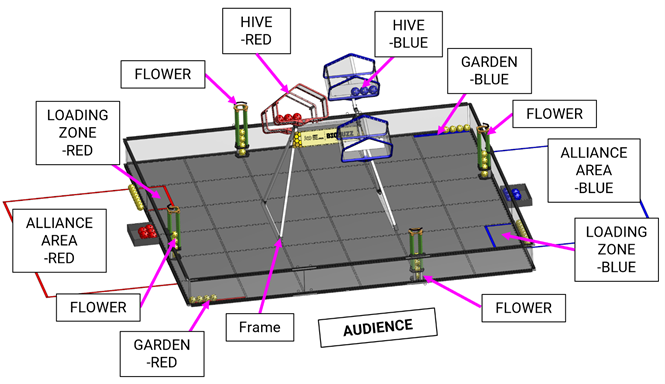
BIOBUZZ FIELD texnik xususiyatlarini bir nechta joylardan olish mumkin:
BIOBUZZ FIELD resurslarining to'liq ro'yxati FIRST veb-saytidagi Maydon resurslarini oʻynash sahifasi-da joylashtirilgan.
ARENA modulli bo'lib, musobaqa mavsumi davomida ko'p marta yig'iladi, ishlatiladi, yig'iladi va tashlanadi. U eskiradi. ARENAS xatti-harakatlar bir-biriga mos kelishini ta'minlash uchun barcha sa'y-harakatlar qo'llaniladi.
Biroq, ARENAS turli joylarda turli tadbir xodimlari va ko'ngillilar tomonidan yig'iladi, ba'zi mintaqalar o'ziga xos qiyinchiliklarga duch kelmoqda, bu esa ba'zi kichik o'zgarishlarga olib keladi.
ARENA xususiyatlari rasmiy o'yinlarda mavjud bo'lishi mumkin bo'lgan o'zgarishlarni aniq aks ettirish uchun mo'ljallangan bo'lib, muhim elementlarning izchilligini ta'minlaydi. Qoʻshimcha maʼlumot olish uchun mahalliy qo'llab-quvvatlash bilan bogʻlaning.
Muvaffaqiyatli jamoalar ushbu oʻzgarishlarga sezgir boʻlmagan ROBOTS-ni loyihalashtiradilar.
BIOBUZZ uchun har bir FIELD FIELD perimetri devorlarining ichki sirtlari bilan chegaralangan taxminan 144 in. x 144 in. (365.75 cm x 365.75 cm) maydondir. FIELD-ning qavat yuzasi 36 interlocking yumshoq ko'pik TILES dan tayyorlangan bo'lib, ularning har biri taxminan 24 in. x 24 in. x 0.59 in. (60.95 cm x 60.95 cm x 1.50 cm) nominal o'lchamga ega.
FIELD quyidagi FIELD elementlari bilan toʻldirilgan va ular bilan oʻralgan:
Rasmiy tadbirlarda AndyMark (am- 5850 _Full) yoki rasmiy litsenziyaga ega ekvivalent tomonidan ishlab chiqariladigan va sotiladigan to'liq BIOBUZZ FIELD ishlatiladi.
FIELD ning yumshoq koʻpikli TILE sirtlari FIRST Texnologik qiyinchilik maydoni yumshoq plyonkalar (am- 2499) yoki unga teng.
FIELD perimetrining asosiy versiyasi AndyMark tomonidan sotiladigan FIRST Texnikaviy qiyinchilik perimetr toʻplami (am-0481) hisoblanadi. Ushbu qoʻllanmadagi barcha rasmlarda FIELD dizaynining am- 0481 versiyasi koʻrsatilgan. Tanlovlarda shunga o'xshash funktsiyalarga ega bo'lgan FIELD perimetrining boshqa versiyalaridan ham foydalanish mumkin.
Ba'zi musobaqalarda, shu jumladan FIRST chempionatida (15.2 o'yin modifikatsiyasi bo'limini ko'rib chiqing), FIELDS platformada yoki ko'tarilishga joylashtiriladi, shuning uchun FIELD ko'tarilgan bo'lsa-da, ALLIANCE AREAS er darajasida qoladi.
Voqea maydonini oʻrnatish qoʻllanmasi hodisalarga FIELD perimetrini o'z joyiga o'rnatish imkoniyatini beradi. AndyMark perimetr to'plamidan foydalangan holda FIELD-ni o'z joyiga o'rnatishni tanlagan tadbirlar AndyMark perimetrining bir qismi bo'lgan perimetr kamarlarini o'rnatishlariga hojat yo'q.
Tadbirda ishlatiladigan FIELD varianti mahalliy Program Delivery Partner tomonidan belgilanadi va bir xil tadbirdagi barcha FIELDS musobaqalari 9.1 bo'limining o'lchamlari va aniqligiga muvofiq bo'lishi va T404 bo'yicha bir-biriga muvofiq bo'lishi kerak.
FIELD zonalari, zonalari va ta'sir belgilari quyida tasvirlangan.
Agar boshqacha ko'rsatilmagan bo'lsa, FIELD bo'ylab chiziqlar va zonalarni belgilash uchun ishlatiladigan tasma 1 in. (2.50 sm) keng yoki 2 in. (5.10 sm) keng ProGaff ® Premium Professional darajadagi Gaffer tasmasi yoki qizil va elektr ko'k rangdagi o'xshash gaffers tasmasi bo'lishi mumkin. FIELDdan tashqaridagi maydonlar hodisadan kelib chiqqan holda boshqa turdagi yoki kenglikdagi tasmalar bilan belgilab qo'yilishi mumkin.
FIELD bo'ylab chiziqlar va zonalarni belgilash uchun ishlatiladigan tasma barcha rasmiy xususiyatlarda uzluksiz chiziqlar sifatida ko'rsatilgan. Ba'zi o'yinlarda tasma chiziqlari uzluksiz segmentlarda qo'llanilishi mumkin bo'lsa-da, bu mavsumda bu shart emas. BIOBUZZ FIELD-da tasma liniyalarining hech biri TILE tikishlarini o'z ichiga olmaydi. O'tkaziladigan tadbirlarda tasma liniyalarini texnik ko'rsatkichlarda ko'rsatilgandek uzluksiz qo'llash tavsiya etiladi.
Rasm 9 - 2: BIOBUZZ ZONES va AREAS
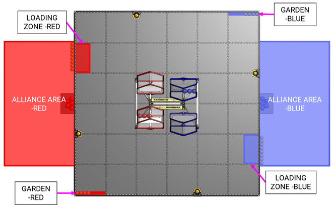
Rasm 9 - 3: LOADING ZONE va GARDEN (POLLEN yashirilgan holda koʻrsatilgan)
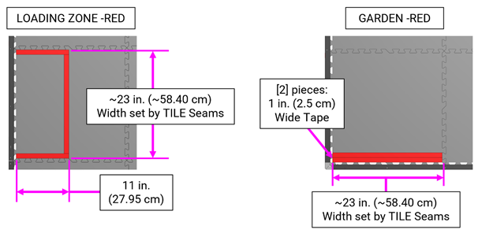
TILE koordinatalari FIELD sozlanishiga yordam berish uchun ishlatiladi. 9 ‐ 4 rasmida TILE tablari bir-biriga bog'liq bo'lgan FIELD-dagi TILES-ning har birining kesishish joylari ko'rsatilgan. Rasm 9 ‐ 5da har bir TILES uchun toʻr koordinatalar tizimi koʻrsatilgan.
| Rasm 9 - 4: TILE yig'im/tab chizig'i joylari 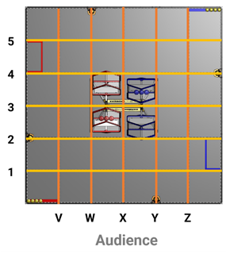 | Rasm 9 - 5: TILE joylar 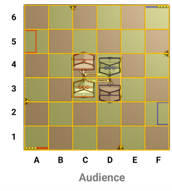 |
ALLIANCE AREA - bu FIELD-ga tutash bo'lgan qizil yoki ko'k ALLIANCE AREA bo'lib, unda MATCH-da DRIVE TEAMS-lar o'zlarini namoyish etadilar.
FIELD shunday joylashtirilganki, qizil ALLIANCE AREA asosiy tomoshabinning ko'rish yo'nalishidan chapda joylashgan.
Jamoalar o'zlarining OPERATOR CONSOLES-larini ALLIANCE AREA-ning ichida FIELD-ning perimetriga yaqin joylashtiradigan tadbirga joylashtirish uchun qisqa stollar, stendlar yoki stullar taqdim etilishi mumkin. Ushbu jadvallar, agar tadbirda nazarda tutilgan bo'lsa, bosh REFEREE, FIELD nazoratchisi yoki FTA ruxsatisiz guruhlar tomonidan olib tashlanmasligi yoki qayta joylashtirilishi mumkin emas.
Rasm 9 - 6: ALLIANCE AREA
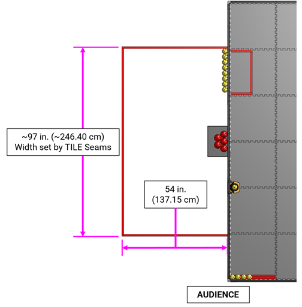
Rasm 9 - 7: HIVE tuzilishi
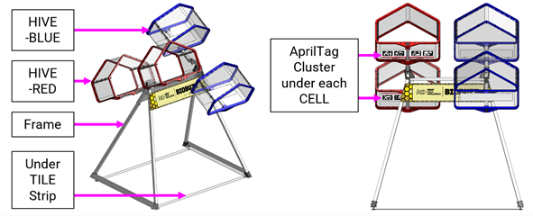
HIVE tuzilmasi FIELD-ning markazida joylashgan. Bir ramka qizil HIVE va ko'k HIVEni ushlab turadi. Har bir HIVE 2 CELLS-dan, har bir HIVE-ning har bir uchida bittadan iborat. Har bir CELL NECTAR va POLLENni ushlab turishi mumkin bo'lgan uch o'lchovli tuzilmadir.
Har bir HIVE o'zgaruvchida bo'lib, har qanday vaqtda CELLS ning biri yuqoriga qarab turishi mumkin. Har bir HIVE ikki tomonlama barqaror bo'lib, yuqoriga qaragan CELLga yetarlicha POLLEN yoki NECTAR LAUNCHED bo'lguncha o'z pozitsiyasini saqlaydi. Har bir CELL ning pastki yuzida 4 x 11 ni oʻz ichiga olgan noyob AprilTag klasteri mavjud. AprilTags
Ramka ikkita uchburchakli metall tuzilmadan iborat bo'lib, ular TILES ostida o'rnatish lentalariga biriktirilgan bo'lib, ular o'zlarining cho'qqisida kesma bilan bog'langan. Ramka 49.46 in. (125.65 sm) keng va 38.95 in. (98.95 sm) chuqurlikdagi poydevor, bu ham uning eng keng nuqtasi. Ramka 2 o'zgaruvchilarini o'z o'qi 43.95-dan (111.65-santimetr) yuqori bo'lgan TILES-dan qo'llab-quvvatlaydi. Ramka oʻlchamlari 9 - 8 rasmida koʻrsatilgan.
Ramkaning har bir tomoniga BIOBUZZ logotipi bilan panel o'rnatilgan. Ushbu grafik har doim ham mavjud bo'lmasligi mumkin.
Rasm 9 - 8: Ramka
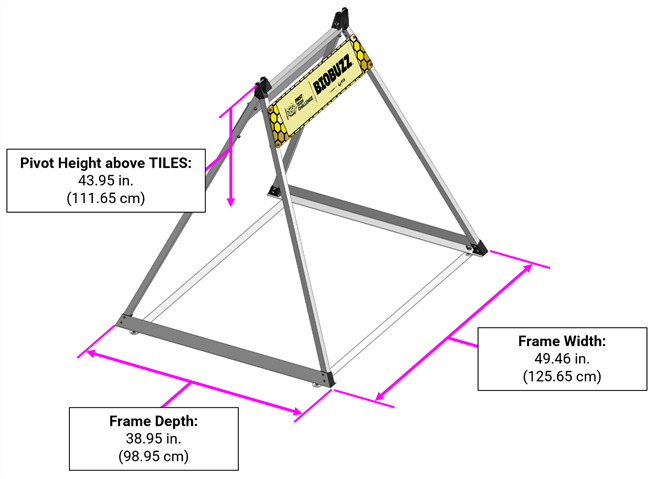
Har bir HIVE ikki CELLS va o'zgaruvchida aylanadigan ulanish yig'indisidan iborat ikki barqaror tuzilmadir. Har bir HIVE-da 9 - 9-rasmda ko'rsatilganidek taxminan 18.8 in. (47.8 sm) masofada ikkita CELLS (har ikkalasi ham qizil yoki ikkalasi ham ko'k) mavjud. Har bir HIVE ramkaning yuqori qismida joylashgan o'zgaruvchi atrofida aylanadi va ikkita barqaror pozitsiyaga ega: har biri yuqoriga qaragan CELL bilan.
CELL ochilishi taxminan 20 in. (50.8 cm) kengligi, 14 in. (35.6 cm) balandligi va 12 in. (30.5 cm) chuqurligi bilan 9 - 11 rasmida ko'rsatilgan.
Rasm 9 - 9: HIVE Maʼlumotlar
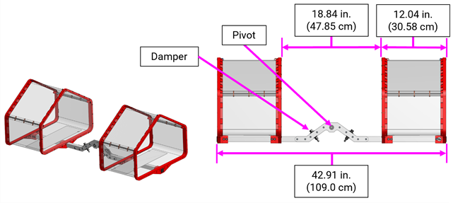
Rasm 9 - 10: HIVE va CELL asosiy tafsilotlari
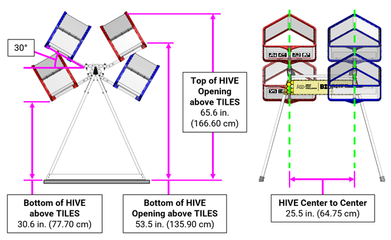
Rasm 9 - 11: CELL
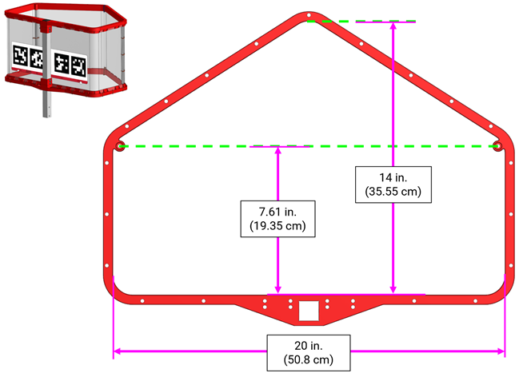
FLOWER - bu FIELD ustidagi POLLEN va NECTAR ustiga joylashtirilishi mumkin bo'lgan, POLLEN esa pastdan olib tashlanishi mumkin bo'lgan tuzilma. FIELD atrofidagi devorga biriktirilgan FLOWERSda to'rtta bor. Har bir FLOWER quyidagi asosiy xususiyatlarga ega:
Yuqori va o'rta halqalar to'rtta HIPS quvurlari bilan ulanadi, o'rta va pastki halqalar esa perimetr devor tomonida kvadratli ekstrudatsiya bilan ulanadi.
Rasm 9 - 12: FLOWER tafsilotlari
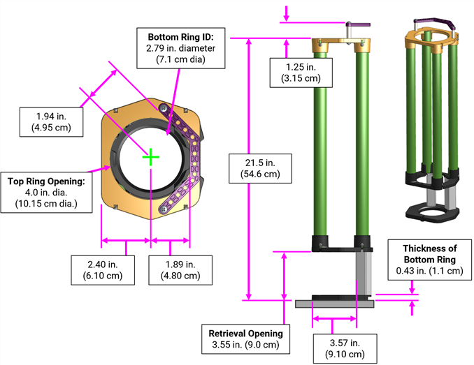
SCORING ELEMENTS uchun BIOBUZZ POLLEN va NECTAR hisoblanadi.
40 POLLEN, 8 qizil NECTAR va 8 koʻk NECTAR BIOBUZZ MATCH-da mavjud.
POLLEN va NECTAR toʻliq sferik emas va oʻlchamlari farq qilishi mumkin. Jamoalar o'zlarining ROBOTS-ni loyihalashtirishda ushbu o'zgarishni rejalashtirishlari kerak.
Rasm 9 - 13: SCORING ELEMENTS: POLLEN
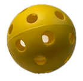
Rasm 9 - 14: SCORING ELEMENTS: NECTAR
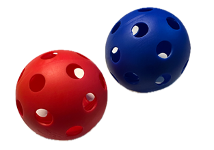
AprilTags uchun BIOBUZZ 36 h 11 belgisi oilasining (rasm 9 ‐ 17) ROBOT navigatsiyasi va nishonlashda yordam berish uchun ishlatiladigan 3.25 in. (8.25 cm) kvadrat nishonlardir.
AprilTagslar AprilTag klasterlariga joylashtirilgan bo'lib, ular bitta stikerga qo'yilgan to'rtta AprilTagsdan iborat. Har bir AprilTag ning identifikatsiyalash uchun ID matn yorlig'i bor. AprilTag klasterlari CELLS-ga bitta stikerning bir qismi sifatida qo'llaniladi. Ushbu Referensiya teshiklaridan AprilTag klasterining qolgan FIELD klasterlariga nisbatan joylashuvini o'lchash uchun foydalanish mumkin. AprilTag oʻlchamlari 9 - 15 rasmida koʻrsatilgan.
Rasm 9 - 15: AprilTag Klaster va Referensiya teshiklari tuzilishi
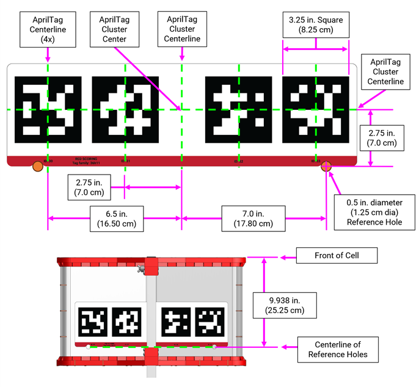
Ushbu qo'llanmada keltirilgan rasmlar namunalar uchun mo'ljallangan bo'lib, o'lchamda emas va ularni amaliyot maqsadlarida bosib chiqarish uchun mo'ljallanmagan.
Ushbu rasmlarning bosilishi mumkin bo'lgan versiyalari uchun iltimos Maydon resurslarini oʻynash sahifasi-ga qarang.
Har bir AprilTag klasteri TILES ga qarab pastga qaragan CELL-ning pastki qismiga qoʻyiladi va pastki cheti FIELD-ning markaziga qarab yoʻnaltiriladi (rasm 9 ‐ 16).
Rasm 9 - 16: CELLdagi AprilTag klasteri
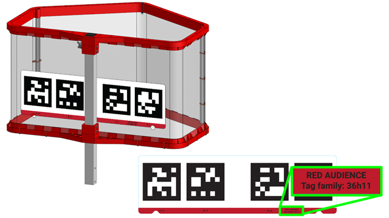
AprilTags-lar FIELD-ning quyidagi joylarida va 9-17-rasmda ko'rsatilgan tartibda joylashgan:
Rasm 9 - 17: AprilTag BIOBUZZ FIELD-dagi joylar
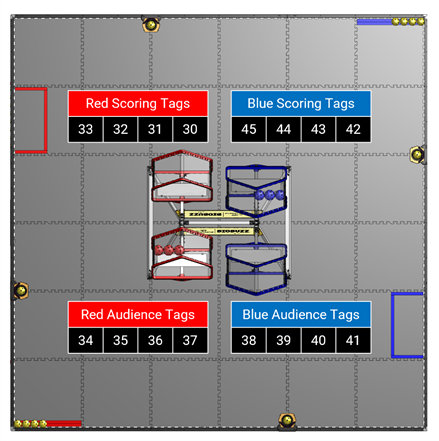
FIELD STAFF ARENA ichida va atrofida bo'lgan ko'ngillilar bo'lib, ular MATCHES-ning samarali, adolatli, xavfsiz va hamkorlik ruhi, Gracious Professionalism ® va saxiylik ruhida aylanishini ta'minlash uchun javobgardirlar.
FIELD STAFF rollari jamoadan bo'lgan ko'ngillilar tomonidan to'ldirilgan bo'lib, ular tadbirga puxta o'qitish va sertifikatlash bilan tayyorgarlik ko'rishadi. 3 FIELD tomonidagi asosiy ko'ngillilar rollari mavjud, ular bilan jamoalar tanish bo'lishi kerak va o'zlarining tadbir tajribasini qimmatli qilish uchun resurslar sifatida foydalanishga rag'batlantiriladi.
Ushbu vazifalarning har biri, shuningdek boshqa FIRST Tech Challenge ko'ngilli vazifalari to'g'risida qo'shimcha ma'lumot olish uchun iltimos, koʻngillilik resurslari-ga qarang.
FIRST hodisalarni boshqarish tizimi MATCH ballari va boshqa hodisalarni boshqarish uchun mas'ul bo'lgan dasturiy ta'minotdir. Tizim barcha FIELD elektronikalarini, shu jumladan kompyuterlar, displeylar, REFEREE va boshqa ko'ngilli elektron qurilmalarni, simsiz kirish nuqtalarini, ethernet kabellarini va hokazolarni o'z ichiga oladi.
FIRST hodisalarni boshqarish tizimi ishtirokchilarni 9 va 1 jadvallarida batafsil bayon etilgan audio signallardan foydalangan holda MATCH-ning muhim bosqichlari haqida ogohlantiradi. Iltimos, audio signallar ishtirokchilarga mehribonlik sifatida mo'ljallanganligini va rasmiy MATCH markerlari sifatida mo'ljallanmaganligini unutmang. Agar audio signal va vizual FIELD taymerlari o'rtasida farq bo'lsa, vizual FIELD taymerlari vakolatli hisoblanadi.
Jadval 9 ‐ 1 Ovozli izlar
| Oʻtkaziladigan hodisa | Vaqt oʻtkazgich qiymati | Tovush yoʻnalishi |
|---|---|---|
| MATCH ishga tushirish | 2:30 | Bu MATCH 3, 2, 1, GO da boshlanadi (ixtiyoriy) Kavaleriya zarbasi |
| AUTO yakuni | 2:00 | Buzzer x 3 |
| AUTO dan TELEOP ga oʻtish | 0:08 dan 0:01 gacha | haydovchilar, nazoratchilarni olinglar, 3-2-1 |
| TELEOP boshlanadi | 2:00 | 3 qo'ng'iroqlari |
| FLOWER Mulk huquqi ochilgan | 1:00 | Chime |
| Oxirgi 20 soniya | 0:20 | Poyezd sipoyasi |
| MATCH oxiri | 0:00 | 3 - ikkinchi Buzzer |
| MATCH toʻxtatildi | N/A | Foghorn |
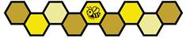